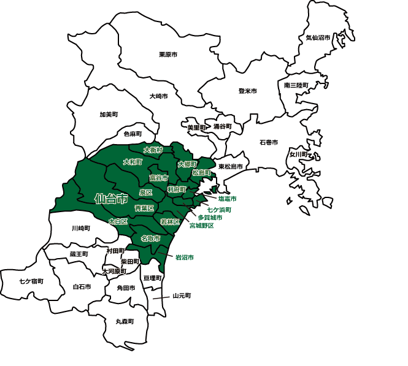
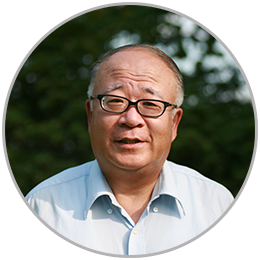

相続税に強い柳沼隆税理士事務所は、随時相談を承っております。
仙台市（青葉区、宮城野区、若林区、太白区、泉区）はもとより、塩竈市、名取市、多賀城市、岩沼市、松島町、七ヶ浜町、利府町、大和町、大郷町、富谷市、大衡村までご対応可能です。
宮城県で上記以外の地域にお住まいの方、石巻市、気仙沼市、白石市、角田市、登米市、栗原市、東松島市、大崎市、刈田郡、蔵王町、七ヶ宿町、柴田郡、大河原町、村田町、柴田町、川崎町、伊具郡、丸森町、亘理郡、亘理町、山元町、加美郡、色麻町、加美町、遠田郡、涌谷町、美里町、牡鹿郡、女川町、本吉郡、南三陸町もご対応可能な場合が多々ございますので、是非ご連絡下さいませ。
旅費のみのご負担で、宮城県外にお住まいの方のご相談も承りますので、お気軽にご連絡頂ければ幸いです。
この度は、栁沼隆税理士事務所のホームページをご覧いただき誠にありがとうございます。
かねてより準備をすすめておりました当事務所ホームページを、公開いたすことになりました。
当事務所は、税理士の専門分野である税務の知識をフルに活用して広く社会に貢献することを理念としております。『社会に必要とされ認められなければ会計事務所など存続できない。逆に社会から頼られる事務所経営ができれば、社会とともに事務所も発展に邁進できる。』という強い信念のもとに平成15年8月から宮城県の仙台市泉区にて事務所経営を続けております。
平成２５年度税制改正により平成２７年１月１日以降の相続から相続税の取り扱いが大きく変わることになりました。
基礎控除額が6割に縮小されることになったのです。
基礎控除額は、相続税の申告が必要になるかどうかのボーダーラインです。
遺産が基礎控除額以下の場合には、相続税の申告は必要ありませんが、逆に遺産が基礎控除を超える場合には、相続税の申告が必要になります。
基礎控除額は約２０年ぶりの改正となり、まさに大改正といってもいい内容です。
改正前は、「バブル経済の過熱による地価の高騰」により平成6年まで基礎控除額が拡大され続けてきました。
しかし、ご存じのようにその後バブル経済は崩壊し、地価は概ね下落傾向にあります。
結果として相続税が課税される人の割合が大幅に低下し続けてきました。この状況を踏まえ、今回の改正に至ったわけであります。
しかし、ここで問題になるのが、相続税の優遇措置です。
他界した人が住んでいた土地について、その土地に親族の方が相続後も住み続ける場合などは土地を売却するわけではありません。そのような土地に対して、他の財産と同様に相続税をかけるのは酷でしょう。
それは他の財産は売ってお金になりますが、住み続けて売却しない土地はお金になるわけでないからです。
そのような考え方から、他界した方が住んでいた一定の土地については、小規模宅地等の特例が適用され、相続税が軽減されます。
また、夫婦は一緒に助け合って生活をしていて、お互いは被相続人が財産を作るために大きな役割を果たしています。
配偶者の老後を保障する必要もあります。
さらに、配偶者同士は同世代であることが多いため、短期間のうちに相続が2回発生し、もう一度同じ財産に相続税がかかってしまいます。
このような事情から、配偶者の税額軽減制度があります。
配偶者は、相続した財産額が1億6,000万円または法定相続分までは、相続税がかからない
自宅の土地を、配偶者又は同居親族（いない場合はマイホームを持たない別居親族）が相続すれば、上限330㎡まで、土地の評価額が8割引となる。
但し、この２つの特例を適用するために注意すべきことは、
相続税の「申告書」を提出する
相続税の申告期限までに、「遺産分割協議」が成立している
ことが必要です。
でも、考えてみてください。
相続税法を理解していないだけで本来受けられるべき優遇処置も受けられずに高い相続税を支払う人がいるということは、そもそも憲法の応能負担原則の趣旨に反するのではないかという点であります。
この応能負担原則の法的根拠は、憲法13条（個人の尊重）、14条（法の下の平等）、25条（生存権の保障）、29条（財産権の保障）等であります。
中には、先祖代々の土地を相続され、現預金のない状況で高い相続税を支払わされる方も多いと聞きます。
このような状況下で、私の会計事務所は、理念に基づき、一定の要件に該当される方には、特別に割引料金設定をさせていただき、このような会計事務所があるということを広く社会に知っていただきたく又社会に貢献していきたいと、ホームページを立ち上げることに至りました。
ホームページを通じて常に新しい情報をご提供することができればと思っております。
今後とも、末永くお付き合いいただけますよう、宜しくお願い申し上げます。
実際のご相談事例をご紹介
明朗な料金体系をご案内
ご相談から完了までの流れ

はじめまして。栁沼隆税理士事務所所長の栁沼です。
本日は、今まで長年相続関係の仕事をしてまいりまして感じたこと、思っていることを述べさせていただきたいと思います。
まず、相続を考えるうえで最も大切なことは、やはり家族について考えることだと思います。どんなテクニックを使って節税できたとしても、家族が不幸になってしまう相続は、失敗といえるのではないでしょうか。
このような例があります。
自宅のほかに広めの土地を持っていたAさんが、ある税理士からのアドバイスで相続対策としてその土地の上で24時間営業のコンビニを借金して開業しました。
これは、小規模宅等の特例を最大限活用させるために、自宅の土地の内330㎡とコンビニとして活用した土地の内400㎡の土地評価を80％減額するための対策と思われますが、その対策を施した結果、そのAさん夫婦は、相続対策と引き換えに時間的にも金銭的にもゆとりある老後生活を犠牲にする結果となったのです。
相続には「親子の3つの幸せ」という考え方があります。まず親の幸せは、子どもの幸せを願った「与える幸せ」です。そして子どもの幸せは、与えてくれる親に感謝をする「もらう幸せ」であり、親の分まで自らの「役割を果たせる幸せ」です。この3つの幸せが1つになり、初めて相続対策が実を結ぶのです。しかし、「与える幸せ」を優先するあまり、ご自身が不幸になっては何にもなりません。
相続税の大増税という言葉がメディアで取り上げられるようになったきっかけは、2013年度税制改正法案です。しかし、大増税議論よりも本当に怖いのは「相続問題」です。たとえ相続税対策に成功しても、親族間の醜い争いに発展するケースがいかに多いか。これまで数々の家庭の相続にかかわるなかで、その惨状を何度も目の当たりにしてきました。
大増税という言葉に踊らされているうちに、相続で本当に考えるべきことが捨て置かれてはいけません。本当に伝えたいのは、幸せな相続を迎えるためにはどんな心構えが必要かという、ただその一点なのです。
相続を迎えるに当たって、まずは親子のコミュニケーションがいかに大切であるか、お話ししましょう。
税法や特例を活用すれば、大増税への打つ手はいくらでもあります。しかし、テクニックばかりを重視して相続税を減らすことに成功したとしても、結果として家族間で争い事になってしまえば意味がありません。
多くの相続事例にかかわっていくなかで、親子というのは実に不可解で不思議な関係だと思うようになりました。親子だからわかり合えること、親子であるが故にわかり合えないことがあります。親子は大変な「縁」で結ばれています。とても近い存在だからこそ、どちらかが話しかけなければ、腹を割った話し合いはなかなかできないものです。とりわけ相続の話となれば、そのハードルはさらに高くなります。
案外、親は子どもから話しかけてくれるのを待っているのかもしれません。ただ、子どもから親に話しかける場合、注意すべき点があります。相続対策にからんで、親の財産を当てにするような雰囲気を出してしまうことです。
親からすると、財産にしか興味がないように見えてしまいます。そうではなく、誰の人生にも山あり谷ありの起伏があるものです。子どもは子どもなりに大変な思いもしているでしょうが、親も苦労して今日の家庭を築いてきたのです。子どもが自分のことを親に理解してもらいたいのと同じように、親も自分のことを子どもにわかってもらいたいものなのです。
昔からの教訓で、次のような言葉があります。
「くれくれ息子にやりたくない」
子世代の方は、まず社会人として、親としての役割をまっとうしてください。きっと親は、子どもが努力する姿を見てくれているものです。ときには人生の話も交わしながら、ぜひ親子の関係を築いてほしいと思います。
遺産相続の話し合いをスムーズに進めるために、一つ、秘策をお伝えします。
遺産相続の話し合いを仏壇の前で行ってもらうのです。どのような流れなのか説明しましょう。
法事などで全員が集まりやすいとき、兄弟姉妹で仏壇の前に集まり、いままで育ててくれた感謝を亡き親に語りかけながら、親の気持ちに添うよう仲良く話し合いをしていく旨を確認します。いきなり遺産相続の話をするよりも、子どもの頃の思い出話に花を咲かせるなどして、兄弟姉妹の絆を確認し合うほうがいいでしょう。
次に遺産相続の話し合いに入るのですが、ここで一つポイントがあります。長男が後継ぎと決まっている場合、税理士が先に長男の思いを確認しておくのです。自分の優雅な生活のために親の財産を多くもらいたいと思っているのか、実家を自分の代で絶やさないために財産を預かろうと思っているのか――どちらの気持ちが強いのか、長男に率直な思いを確認します。
そのうえで、実家の存続を本当に願っているのであれば、その思いを素直に兄弟姉妹に訴えます。そして、「何とか預からせてほしい」と頭を下げて頼むのです。頭を下げたらいいというわけではありませんが、それで遺産相続の話し合いがスムーズに進展するケースも多くあります。
世間一般では、相続人は皆平等といわれますが、元の財産の持ち主である親からすれば、単純に、数学的な平等が本当の平等といえないような気持ちを抱いているものです。相続人それぞれの役割により、分け方の比率に上下があることが、本当の意味での平等である場合もあるのではないでしょうか。とりわけ長男が実家を守る場合、相続人のなかでも長男の役割の比重は重いといえるでしょう。
話し合いの雲行きが怪しくなってきた場合、ご仏壇の遺影の写真を見ながら次のようにお伝えすることもあります。
「もし亡くなったお父さん（あるいはお母さん）がいま目の前にいるとしたら、この状況を見て、みなさんにどんな話をされるでしょうね」
そうやって親の存在を改めて感じてもらうことで感情が静まり、冷静に判断できるようにもなるのです。
現在の相続対策は「分割」が中心となっているからこそ、遺言書をぜひ作成してほしいと思います。遺言書は相続時のトラブルを防ぎ、相続財産を効率よく引き継ぐためのものです。分割しにくい不動産やその他の資産が相続財産の中心であったとしても、遺言書が残されていれば被相続人の意思がわかり、相続手続きをスムーズに行えます。
遺言書は法的に大きな効力があります。遺言の内容が有効の場合、仮に相続人が遺言書に書かれている内容とは異なる方法で遺産分割をしようとすると、相続人全員で話し合い、全員が合意しなければなりません。相続人には遺留分の減殺請求をする権利がありますが、遺言の内容によって遺産分割を進めるのが前提です。
遺言書の内容は単なる遺言者の希望ではなく、法的効力が発生します。したがって正しく遺言書を作成しておくことで、遺族が相続手続きをスムーズに進める助けになるのです。
ただし、遺言者の意思だからとはいえ、もらう人の立場になって考えなければ、逆に遺言書が相続争いの引き金になる場合もあります。そこでここからは、遺言書を作成する際のポイントについて話してみましょう。
相続のお手伝いをさせていただくなかでは、遺言書が残されているケースはまだ少数といわざるを得ません。では、特に遺言書を作成しておいたほうがいいのは、具体的にどういったケースでしょうか。
まず子どものいない夫婦は遺言書を必ず作成してください。たとえば夫婦の間に子どもも両親もおらず、夫が先に亡くなった場合、妻の相続分は４分の３です。残りの４分の１は夫の兄弟姉妹が相続することになります。
仮に相続財産が自宅しかなく、遺産分割の話し合いがこじれた場合、妻は長年住み慣れたマイホームを売りに出し、売却資金の４分の１を兄弟姉妹に渡さなければならない可能性があるのです。そうならないためにも、すべての財産を妻に相続すると遺言書に書いておくのです。そうすれば妻も安心できるはずです。
子どものいない夫婦が遺言書を作成する場合、余計な話にはなりますが、離婚の可能性がないのかということも念頭に置いていたほうがいいかもしれません。ただし、遺言書には条件の記載も可能です。離婚した場合は無効との条件をつけることも可能です。
たとえば夫婦に子どもが2人いて、自宅しかない財産を妻に相続させるような場合も、遺言書を作成しておいたほうがいいでしょう。遺言書がなければ妻の相続分は２分の１です。残りの２分の１は子どもたちが相続することになります。
子どもたちが家を売って相続分を分けてほしいと主張すれば、最悪のケースでは、妻は長年住み慣れた家を手放さなくてはならなくなります。そうした事態を回避するためにも、自宅は妻に相続させると遺言書に記載しておきましょう。
息子の嫁にも財産を譲りたい場合も同様、遺言書を作成しておきたいところです。現在の民法では、妻は夫の両親の遺産の相続権がありません。
仮に妻が同居の両親の面倒を長く看ていたとしましょう。この場合、両親は息子の嫁にも財産を譲りたいと思うはずです。しかし、万が一にも夫が両親よりも先に亡くなり、さらに子どもがいなければ、亡夫の親の財産はすべて夫の兄弟姉妹のものとなります。相続人以外にお世話になった人にも財産を渡す場合、その意思を遺言書に書き残しておくのです。
ほかにも再婚で先妻・後妻の両方に子どもがいるケースや、内縁の妻がいる場合など、財産を残したい人にきちんと相続できるよう、遺言書を活用するといいでしょう。
そもそも遺言書を書く場合、自筆証書遺言書を選択される方が多いと思います。気軽に作成でき、コストもかからないからです。
しかし、私が相続対策のお手伝いをさせていただく場合、自筆証書遺言書ではなく、公正証書遺言書を必ず作成してもらうようにしています。自筆証書遺言書は相続人がもめるもとになりかねないからです。
まず自筆証書遺言書の長所と短所を述べたいと思います。
長所は、自分で何度でも作成できて、遺言書の作成を秘密にできることや費用がかからないことです。
また短所は、遺言書に不備があれば無効になることや偽造、変造、隠匿、破棄の危険性があること、紛失のおそれがあること、相続人の立ち会いのもと、家庭裁判所の検認が必要なことなどが挙げられます。
遺言書は定められた要件を満たさない限り有効になりません。遺言者氏名や住所、作成年月日や押印などについて規定があり、1つでも抜けがあると無効になります。
確かに自筆証書遺言書は遺言者本人の自筆、捺印によって手軽に作成できますが、簡単につくれるというのは、偽造や変造などの危険性もはらむということです。たとえ偽造ではなくても、相続人の誰かが遺言の内容に不満を抱いた場合、偽造の可能性を故意に疑い始めるなどのトラブルの可能性もあります。
あるいは遺産の特定が十分でない場合や、遺産の分配についての指定が明確でない場合も同様、遺族の間でもめごとにつながりかねません。具体的にどんな財産があり、どの財産を誰にどの割合で渡すのかが明確に記載されていなければ、かえってトラブルの火種を残してしまいかねないのです。
よって自筆証書遺言書を作成する場合、定められた様式を備えた文章を用いて、十分な配慮をもって書いていただきたいと思います。残された家族が仲良くやっていくためにも、元気なうちにしっかりと考えながら、遺言書を作成されることをおすすめします。
自筆証書遺言書が相続トラブルの火種になる最大の理由の一つは、「検認」手続きです。自筆証書遺言書が法律上の「遺言書」となるためには、家庭裁判所での「検認」という手続きが必要となります。この手続きが本当に大変なのです。
検認とは、家庭裁判所が相続人や利害関係者の立ち会いのもとで「遺言書」を開封し、その内容を確認することで、相続のトラブルを未然に防ぐ意味を持たせるための手続きのことをいいます。この検認にたどり着くまでには、次の手続きを進めなければなりません。
まず遺言書の発見者または保管者（次からは、申立人といいます）が家庭裁判所に行き、「遺言書検認の家事審判申立書」をもらってきます。その書類に必要事項を記載すると同時に、申立人と相続人全員の戸籍謄本、遺言者の除籍謄本と原戸籍をそろえる必要があります。
それらの書類と相続人全員分の往復ハガキを持ち、家庭裁判所に提出しに行きます。家庭裁判所は、それらを確認のうえ、相続人全員に「遺言書検認」の日時を知らせる往復ハガキを郵送します。
その日時に相続人全員が家庭裁判所に集合し、そこで裁判所が全員に遺言者本人が自ら書いたものであるか否かの確認をし、異議がなければ「検認」は終了し、これでようやく遺言書として法律上の効力を持つようになるのです。
以上の流れをみて、まずほとんどの方は気分が重くなるのではないでしょうか。誰でも一生に一度あるかないかの慣れないことで行動するのは、精神的にも大変疲れるものです。
この検認の手続きの結果、相続人全員が幸せになるのであれば、まだ苦労するやりがいはあるでしょう。しかし、相続人同士で利害が対立するのがわかっているなか、こうした行動をとる必要が生じた場合、果たしてスムーズに進むでしょうか。
検認の手続きは、あくまで相続人全員がかかわらなければなりません。誰か1人でも非協力的な人がいれば、たちまち手続きはストップしてしまいます。
自筆証書遺言書は、遺族にここまで大変な思いをさせたうえで、ようやく法的に認められるのです。税理士によっては、自筆証書遺言書は遺言書ではないと言い切る人もいるほどです。相続の手続きをスムーズにさせるはずの遺言書が、遺族のトラブルを引き起こすきっかけになるのであれば、自筆証書遺言書を残す意味は薄れてしまいます。
遺言書を作成する場合、できる限り自筆証書遺言書は避けたほうが賢明でしょう。それでも自筆証書遺言書を書かれる場合、こうしたデメリットも考慮に入れて準備をしてもらいたいと思います。
このように、自筆証書遺言書は作成するのは簡単ですが、相続発生後、法的に認められるための手続きが大変です。いわば遺言書の作成の苦労を、後世に先送りしているといえるかもしれません。
自筆証書遺言書のデメリットを防ぎ、相続手続きをスムーズに進めるためにも、公正証書遺言書を作成してほしいと思います。
相続対策のお手伝いをする際、必ず公正証書遺言書を書いてもらうようにしています。相談をいただいた時点ですでに自筆証書遺言書を作成されていた場合、改めて公正証書遺言書をつくってもらうようにお願いしています。
自筆証書遺言書の短所である偽造などを補うのが公正証書遺言書です。遺言者は、公証役場で証人２人以上の立ち会いのもと、遺言内容を口述し、公証人に遺言書を作成してもらい、原本を公証役場で保管してもらいます。
公正証書遺言書は公証人が作成するため、無効になることがありません。したがって、相続手続きの際に銀行や法務局に公正証書遺言書を添付すれば問題なく受理されます。自筆証書遺言書に比べて、遺族の相続手続きが間違いなく円滑に運びます。
公正証書遺言書の長所と短所について述べます。
長所は、公証人が作成するので無効にならないことや偽造、変造、隠匿、破棄されるおそれがないこと、また文字が書けなくても作成できることや病気の場合には、公証人に出張してもらえること、自筆証書遺言書のように家庭裁判所の検認は不要であることが挙げられます。
これに対して短所は、他人に知られてしまうことや若干の手間と手数料が必要なくらいです。これをみてもわかるように、公正証書遺言書は自筆証書遺言書の短所を補う長所があげられます。なかでも家庭裁判所による検認の手続きが不要である点は、遺族の方にとっては大変助かるのではないでしょうか。
遺言書は敷居が高いという人は、まずエンディングノートを作成してご自身の財産を明確にしとく方法もよいでしょう。残された人に負担をかけない意味も含めて、エンディングノートを作成する意義は大きいといえます。
ほんの些細なことでかまいません。親と同居している子世代の方であれば、朝出会えば「おはよう」と挨拶し、夜寝る前は「おやすみ」と声をかける。親元を離れて住んでいる場合は、定期的に電話を入れるなどして親を気遣ってあげる。「親父、元気か」――このひと言が、親にとっていかに嬉しいか。子世代の人でも、自分の子どもが独立していれば、おわかりになるのではないでしょうか。
もちろん親子だけでなく、兄弟姉妹の関係についても同様です。お互いに家族を持って暮らすようになると、頻繁に連絡を取り合うのは難しくなりますが、盆休みや正月休みなどを利用して実家に帰省し、親を囲みながら兄弟姉妹も顔を合わせたいものです。
親子の関係を考えたとき、ぜひとも子世代の方にお伝えしたいことがあります。それは、相続対策のテクニックをいくら勉強しても、最終的に親が納得してくれない限り、何も前に進まないということです。反対にいえば、親さえ理解を示してくれれば、ほとんどの対策は可能です。
親が気持ちよく首を縦に振ってくれるためにどうすればいいか――それを考えるのが、子世代にとっての相続対策の一つといえるかもしれません。親というのは、親孝行をする子どもに財産を渡したいと思うものです。相続について考えることは、家族について考えることです。親子や兄弟間で良い関係が築けていれば、相続問題に発展することはほとんどありません。
相続を機に家族が疎遠になり断絶するのではなく、より絆を強めるきっかけにする――これこそが家族にとって一番の幸せといえるのではないのでしょうか。
ご清聴ありがとうございました。
国税庁のホームページに入り、相続税の申告要否判定コーナーをクリックしてください。
携帯（優先）
お電話の場合は、留守にすることが多いので携帯にかけていただくとすぐに対応可能です。
柳沼隆税理士事務所
相続に特化した税理士事務所
TEL : 022-347-4875
FAX : 022-347-4876
携帯：090-6680-7510（優先）
E-Mail : yaginuma-takashi＠tkcnf.or.jp
〒989-3202
仙台市青葉区中山台2丁目27
YSKコーポ中山台413号室